Lesson Overview
The scan opens with methane combustion and a lesson map. The central idea is that chemical reactions rearrange atoms: reactants become products, while the total number of each atom is conserved when the equation is balanced.
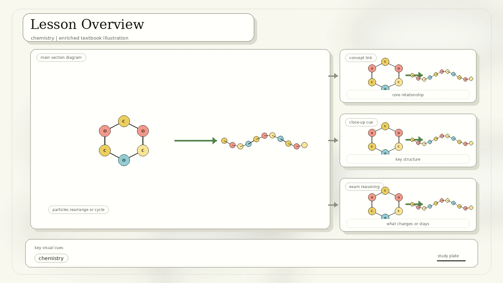
Synthesis, decomposition, single replacement, and double replacement.
Oxidation, reduction, fuels, oxygen, and energy release as light and heat.
pH, indicators, neutralization, salts, water, and carbonate reactions.
Relative atomic mass, molar mass, carbonates, carbon dioxide, and the carbon cycle.
Exam habit: classify the reaction first, then balance the equation. Classification tells you the pattern; balancing checks conservation of atoms.
Four Basic Reaction Types
The Week 08 scan shows four symbolic patterns. Combustion is listed separately because it is common, energetic, and often tested with hydrocarbons.
Two or more substances combine to make a larger product.
One compound breaks into simpler substances.
A more reactive element replaces a less reactive one in a compound.
Ions exchange partners, often forming water, a gas, or an insoluble solid.
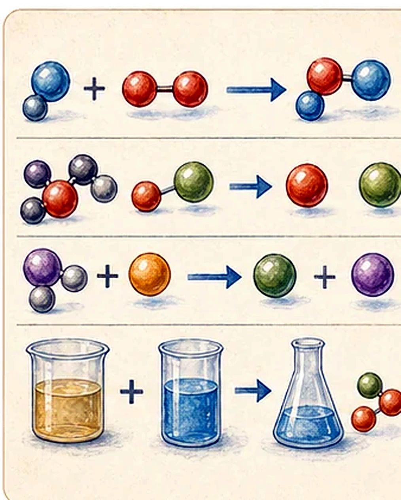
Recognize The Type Of Reaction
The scan includes practice equations with handwritten categories. The table keeps the source answer and adds a balanced form when the printed equation was not balanced.
| Source equation | Balanced equation | Type |
|---|---|---|
| H2 + O2 -> H2O | 2H2 + O2 -> 2H2O | Synthesis |
| KI + Cl2 -> KCl + I2 | 2KI + Cl2 -> 2KCl + I2 | Single replacement |
| NaI + Pb(NO3)2 -> NaNO3 + PbI2 | 2NaI + Pb(NO3)2 -> 2NaNO3 + PbI2 | Double replacement |
| NaHCO3 -> Na2CO3 + H2O + CO2 | 2NaHCO3 -> Na2CO3 + H2O + CO2 | Decomposition |
| AgNO3 + Cu -> Cu(NO3)2 + Ag | 2AgNO3 + Cu -> Cu(NO3)2 + 2Ag | Single replacement |
| H2O + SO3 -> H2SO4 | H2O + SO3 -> H2SO4 | Synthesis |
| KClO3 -> KCl + O2 | 2KClO3 -> 2KCl + 3O2 | Decomposition |
| BaCl2 + Na2SO4 -> NaCl(aq) + BaSO4 | BaCl2 + Na2SO4 -> 2NaCl(aq) + BaSO4(s) | Double replacement and precipitation |
Oxidation, Reduction, And Combustion
Redox reactions include oxidation and reduction together. The handout connects redox to synthesis, decomposition, single replacement, and combustion.
Gains oxygen, loses hydrogen, loses electrons, or increases oxidation state.
Loses oxygen, gains hydrogen, gains electrons, or decreases oxidation state.
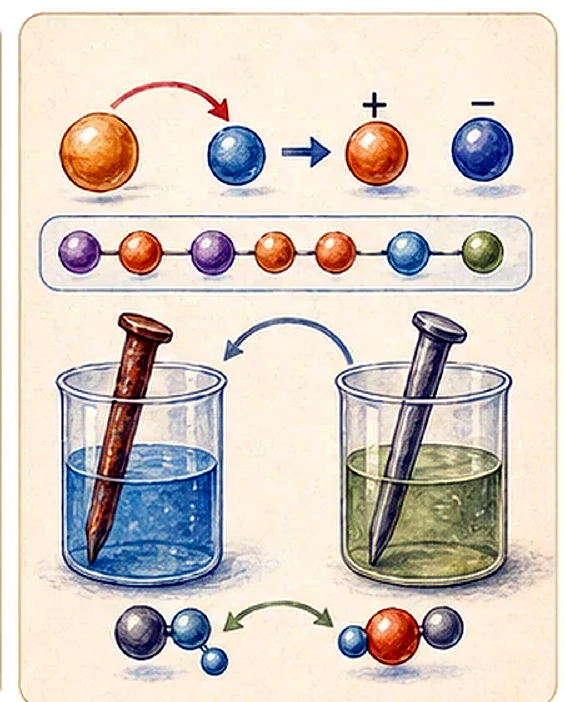
Metals often act as reducers because they can give out electrons. Some non-metals can also reduce other substances in the right reaction.
Oxygen and reactive non-metals such as fluorine and chlorine often accept electrons.
A more reactive metal replaces a less reactive metal from its compound.
Combustion Reaction
Combustion is a high-temperature, exothermic redox reaction between a fuel and an oxidant, usually oxygen in air. It produces oxidized products and releases energy as light and heat.
Hydrogen, hydrocarbons, carbon, alcohols, wood, coal, natural gas, gasoline, and oil.
Hydrogen burns to water vapor. Hydrocarbons burn completely to carbon dioxide and water vapor when oxygen is sufficient.
Extra SPSO note: incomplete combustion has too little oxygen, so carbon monoxide or soot can form. Carbon monoxide is dangerous because it binds strongly to hemoglobin.
Acids, Bases, And pH
The scan says the first scientific concept of acids and bases was provided by Lavoisier around 1776. In the lesson model, acids contain many hydrogen ions or protons, while bases contain many hydroxide ions.
Lots of H+ ions in solution. Acids turn litmus paper red and often taste sour, but lab chemicals must never be tasted.
Lots of OH- ions in solution. Bases turn litmus paper blue, can feel slimy, and often taste bitter in food examples.
pH 7, such as pure water. Neutral does not mean unreactive; it means neither acidic nor alkaline by pH.
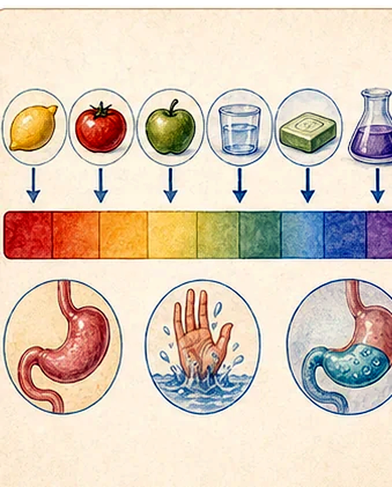
Universal indicator, natural anthocyanin indicator such as purple cabbage, and methyl orange can show pH changes.
Vitamin C is an acid called ascorbic acid.
Proteins are made from amino acids.
Ammonia, NH3, is a base chemical.
Neutralization And Carbonates
Acid-base reactions are a form of double replacement. The scan gives the general pattern and two examples.
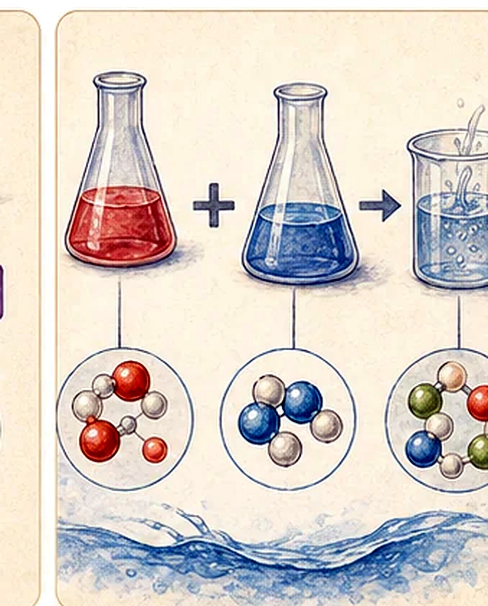
Acid Plus Carbonate
Vinegar and baking soda use a related pattern: an acid reacts with a carbonate or hydrogencarbonate salt to produce a salt, carbon dioxide, and water.
acid + carbonate salt -> salt + CO2 + H2O
NaHCO3 + CH3COOH -> CH3COONa + H2O + CO2
Useful balanced carbonate equation: CaCO3 + 2CH3COOH -> Ca(CH3COO)2 + CO2 + H2O.
The Mole And Chemical Calculation
The handout moves from reaction patterns to amounts. The mole is a counting unit for particles, like "dozen" but much larger.
Carbon-12 is chosen as the standard atom. Other atomic masses are compared with 1/12 of the mass of one carbon-12 atom.
Elements can have isotopes in different natural abundances, so the average relative atomic mass can be decimal.
Relative atomic mass, Ar, and relative molecular or formula mass, Mr, have no unit.
One mole of carbon-12 has mass 12 g, so its molar mass is 12 g/mol.
One mole contains 6.02 x 1023 particles.
The molar mass of a substance equals its relative atomic, molecular, or formula mass in grams per mole.
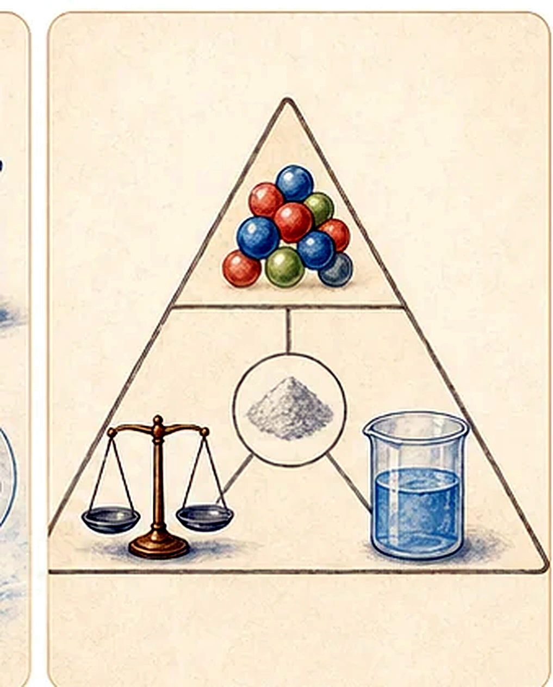
Worked Examples From The Scan
Carbon, Its Group, And Carbon Dioxide
The scan connects carbonate reactions to carbon chemistry. Carbon is in group IV, also called group 14 in the modern periodic table.
Carbon Family
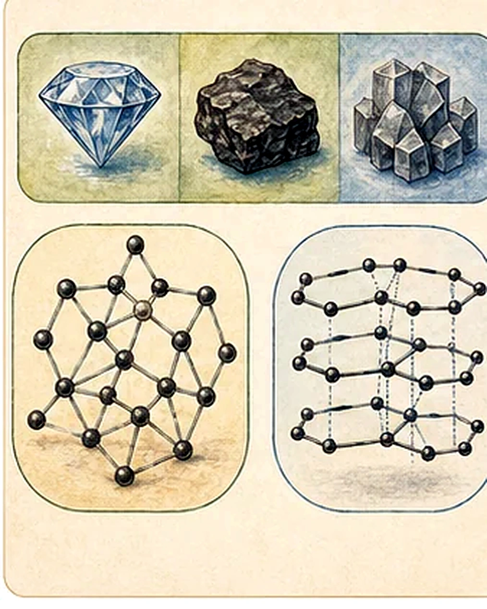
Carbon forms hydrocarbons used as refrigerants, lubricants, solvents, chemical feedstock, petrochemicals, and fossil fuels.
Carbon forms sugars, alcohols, fats, aromatic esters, and carotenoids.
Carbon compounds include alkaloids, amino acids, rubber products, DNA, RNA, and ATP.
Sand, glass, and quartz are silicon dioxide. Silicon is important in the semiconductor industry.
Carbon Dioxide Properties
CO2 is linear: O=C=O.
12 + 16 + 16 = 44 g/mol.
About 1.8 to 2.0 kg/m3, so it is denser than air.
The scan notes about 1.8 g CO2 dissolving in roughly 0.9 to 1 L pure water.
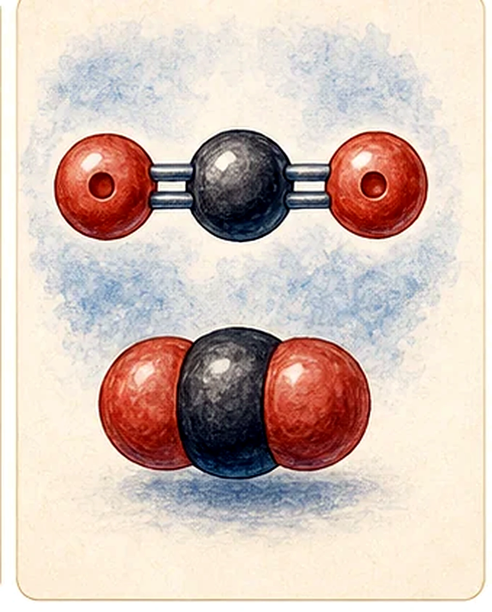
Test For Carbon Dioxide
The scan gives limewater as the test. Carbon dioxide turns limewater milky or chalky because calcium carbonate precipitate forms.
Ca(OH)2 + CO2 -> CaCO3 + H2O
CO2 + H2O <-> H2CO3
Carbon Cycle, Photosynthesis, And Respiration
The carbon cycle section tracks how carbon dioxide is added to and removed from the atmosphere.
Adding Carbon Dioxide
- Respiration by plants, animals, fungi, and microorganisms.
- Combustion of fuel such as wood, coal, natural gas, gasoline, and oil.
- Decomposition and decay of dead organisms and waste products.
Removing Carbon Dioxide
- Photosynthesis by plants and phytoplankton.
- Ocean uptake and long-term carbon storage.
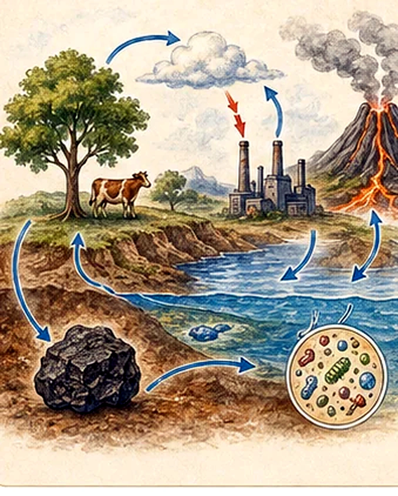
Photosynthesis Removes Carbon Dioxide
6CO2 + 6H2O -> C6H12O6 + 6O2
Carbon dioxide is taken in through leaves.
Water is taken in by roots.
Sunlight supplies the light energy.
Chlorophyll absorbs sunlight in chloroplasts.
Low light decreases the rate; after enough light, extra light has little effect. Too low or too high a temperature lowers the rate. Low CO2 decreases the rate, but extra CO2 above the optimum has little effect.
Glucose molecules can join to make starch for storage and cellulose for cell walls. Glucose can also be changed into lipids for seed storage, and with nitrates from soil it can form amino acids and then proteins.
Rainforest note: the scan calls rainforests the "lungs of the planet" and says they generate about 20% of the world's oxygen while reducing pollutant levels. A careful exam explanation is that rainforests photosynthesize, store carbon, and support biodiversity; their net oxygen contribution is balanced by respiration and decay over long periods.
Respiration Adds Carbon Dioxide
C6H12O6 + 6O2 -> 6CO2 + 6H2O + energy stored in ATP
Oxygen supports respiration in animals, fungi, plants, and many microorganisms. During respiration, chemical potential energy stored in food is converted into useful forms of energy. Carbon dioxide is eventually released.
Combustion Of Fuel Adds Carbon Dioxide
Human activities add carbon dioxide when hydrocarbon fuels are burned. During combustion, carbon in fossil fuels combines with oxygen in air to form carbon dioxide and water vapor.
Ocean Carbon Sink And Acidification
The scan finishes with the ocean as a carbon sink and the effect of added carbon dioxide on ocean chemistry.
Removing Carbon Dioxide: Ocean Carbon Sink
- A carbon sink is a natural or artificial reservoir that absorbs and stores atmospheric carbon.
- Physical storage transfers carbon to the deep sea where it can be sequestered.
- Biological storage happens when carbon becomes organic matter, carbonate ions, shells, or sediments.
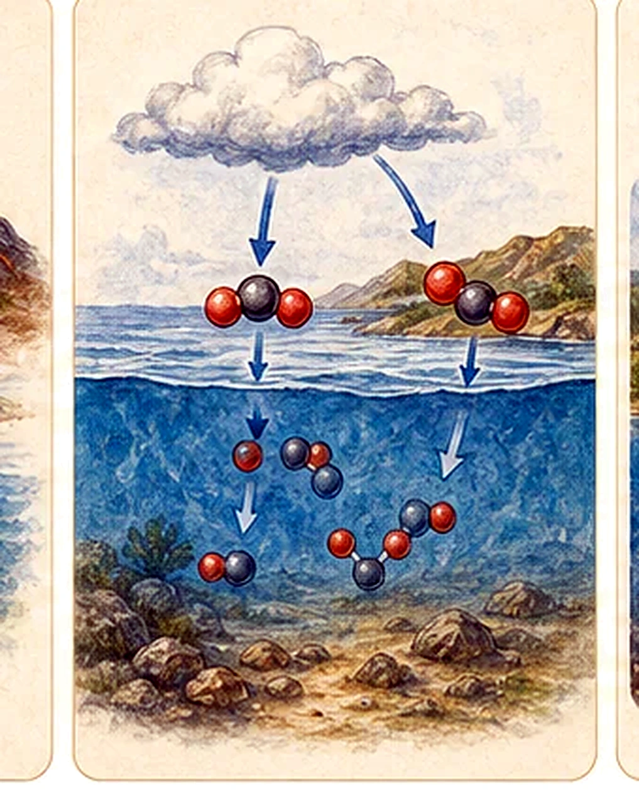
Ocean Acidification
More human-driven carbon dioxide dissolves into the ocean. The ocean is still slightly basic, with average pH around 8.1, but absorbing more CO2 decreases pH and makes the ocean more acidic.
CO2 + H2O + CO32- -> 2HCO3-
Consuming carbonate ions can make calcification harder for corals and shellfish that need carbonate to build skeletons and shells.
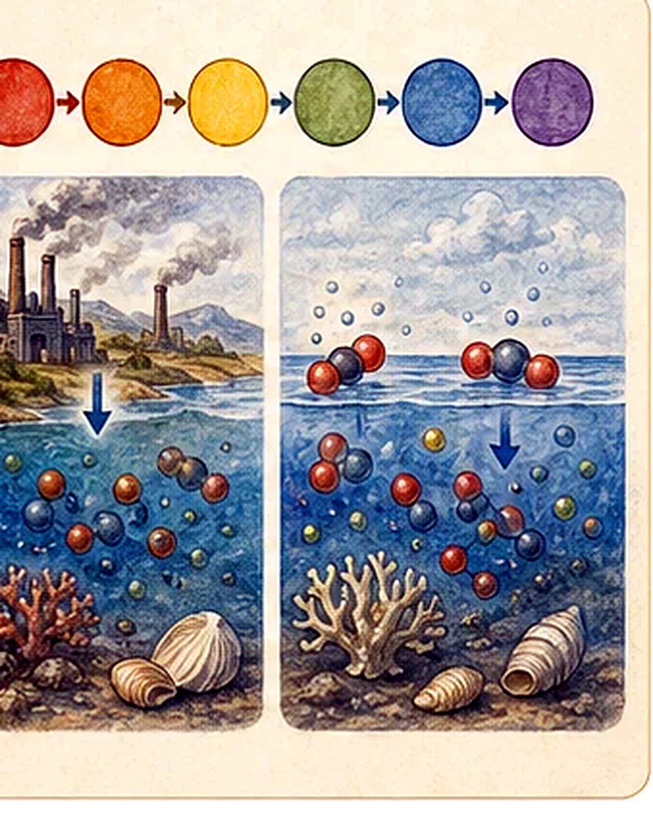
Wrap Up
The source closes with five review targets.
Recognize synthesis, decomposition, single replacement, double replacement, and combustion.
Use pH, ions, indicators, and neutralization patterns to predict products.
Use relative masses, Avogadro's constant, and mole ratios to calculate mass.
Know carbon, silicon, germanium, tin, lead, and their broad behavior.
Connect CO2 to photosynthesis, respiration, combustion, oceans, and acidification.
Quick Checks
Rebuilt from the Week 08 scanned PDF, IMG_20260427_0008.pdf. Duplicate scan frames were merged, and the final handwritten molecule labels for CO2, O2, and H2O were incorporated into the molecule diagrams.